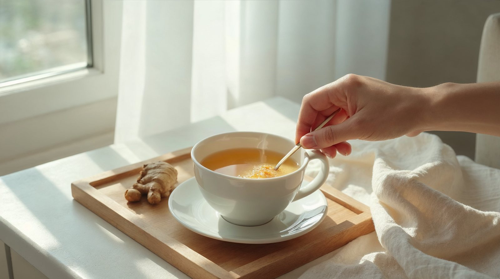
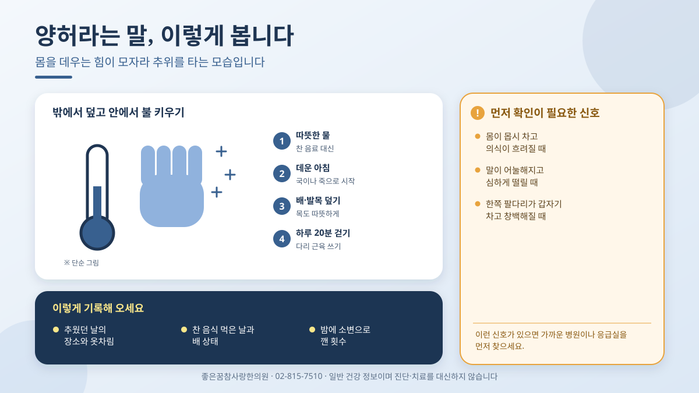

이종호 한의사 감수좋은꿈참사랑한의원 대표원장 (한의사 면허번호 19769)발행 2026-11-26 · 수정 2026-11-26
이 글의 차례
한여름에도 사무실 에어컨 아래에서 카디건을 꺼내 입고, 겨울이면 양말을 두 켤레씩 신고 주무신다는 분이 계십니다. 찬물 한 잔에 배가 꾸르륵거리고, 다른 사람들은 덥다는 방에서 혼자 손이 얼음장 같다고 하십니다. 이런 말씀을 진료실에서 자주 듣습니다.
진찰을 마치고 "몸을 데우는 힘이 조금 모자란 모습이에요. 한의학에서는 양허라고 부릅니다"라고 말씀드리면 "그럼 제가 냉증이라는 병인가요?" 하고 되물으십니다. 몸이 차다는 것은 오래 느껴 오셨지만, 그것에 이름이 붙으니 괜히 걱정이 되시는 겁니다.
먼저 분명히 말씀드리겠습니다. 양허는 병명이 아닙니다. 검사 수치로 정하는 진단명도 아닙니다. 한의학에서 오랫동안 몸의 상태를 묘사할 때 써 온 전통적인 표현이고, 진찰에서 본 여러 모습을 묶어 설명하는 말입니다.
이 글에서는 양허라는 말이 어떤 몸의 모습을 가리키는지, 손발이 찬 다른 경우와는 어떻게 나누는지, 진료실에서 무엇을 보고 이 설명을 쓰는지, 그리고 생활에서 몸을 데우는 습관은 어떻게 챙기면 좋은지를 차례로 말씀드리겠습니다.
양허는 어떤 몸 상태를 말하나요?
한의학에서는 몸을 데우고 움직이는 쪽을 양, 식히고 적시는 쪽을 음이라고 나누어 설명해 왔습니다. 양은 아궁이의 불처럼 몸을 따뜻하게 하고, 음식을 소화시키고, 물을 돌려 내보내는 힘을 아우르는 말에 가깝습니다.
양허는 이 데우는 힘이 모자란 모습입니다. 아궁이 불이 약하면 방이 쉽게 식고 밥도 잘 익지 않듯, 몸을 데우는 힘이 모자라면 추위를 많이 타고, 찬 것을 먹으면 소화가 더디며, 물이 잘 돌지 않아 붓거나 소변이 잦아진다고 설명합니다.
흔히 기허에 차가움이 더해진 모습이라고 풀어 말하기도 합니다. 기운이 없고 쉽게 지치는 모습에, 손발과 아랫배, 허리가 차고 따뜻한 것을 찾는 모습이 함께 있을 때 양허라는 설명을 씁니다.
이 말도 사람에게 붙이는 딱지가 아닙니다. 찬 음식을 많이 먹은 여름, 크게 앓고 난 뒤, 나이가 들면서 활동이 줄어든 시기처럼 특정한 때에 이런 모습이 짙어졌다가 생활이 바뀌면 옅어지기도 합니다. 지금 이 시기의 몸을 묘사하는 말로 이해해 주시면 됩니다.
왜 양허 같은 상태가 생긴다고 보나요
한의학에서는 몸의 불이 움직임과 따뜻한 음식, 충분한 쉼으로 지켜지고, 찬 음식과 찬 환경, 과로, 오랜 병으로 약해진다고 설명해 왔습니다. 데우는 힘을 쓰는 쪽이 오래 많으면 모자란 쪽으로 기운다고 봅니다.
생활에서 흔히 보는 이유는 이렇습니다.
- 찬 음료와 아이스크림, 날 음식을 즐겨 먹는 습관
- 하루 종일 에어컨 아래에서 지내거나 배와 발을 차게 두는 옷차림
- 움직임이 적어 근육이 줄어든 생활
- 오래 앓았거나 수술 뒤 회복기를 건너뛴 경우
- 무리한 다이어트로 식사량이 크게 줄어든 경우
- 나이가 들며 활동과 식사량이 함께 줄어든 경우
근육 이야기를 덧붙이고 싶습니다. 몸의 열은 상당 부분 근육에서 만들어집니다. 움직임이 적어 근육이 줄면 같은 옷을 입어도 더 춥게 느껴질 수 있습니다. 한의학에서 말하는 데우는 힘과 현대 의학의 열 생산이 이 부분에서 맞닿아 있습니다.
계절도 영향을 줍니다. 겨울에는 당연히 추위가 두드러지지만, 의외로 여름에 양허에 가까운 모습이 짙어지는 분도 많습니다. 냉방과 찬 음식이 겹치면서 배와 손발이 오히려 차가워지기 때문입니다.
현대 의학으로 보면 이런 모습 뒤에 갑상선 기능 저하, 빈혈, 저혈압, 혈관이 쉽게 오그라드는 체질, 근육량 감소 같은 이유가 숨어 있을 수 있습니다. 그래서 양허라는 설명을 드리더라도 필요하면 병원 검사를 함께 권해 드립니다.
진맥·설진·문진에서는 무엇을 함께 보나요
진맥에서는 맥의 깊이와 빠르기, 힘을 봅니다. 양허에 가까운 분은 손가락을 꾹 눌러야 느껴질 만큼 깊고, 느리면서 힘이 약한 맥을 보이는 경우가 많습니다. 다만 추운 바깥에서 막 들어오신 직후에는 누구나 맥이 가라앉을 수 있어서 몸을 조금 녹인 뒤에 짚습니다.
설진에서는 혀의 색과 촉촉함을 봅니다. 혀가 엷은 빛을 띠고 도톰하게 부어 있으며, 표면이 촉촉하고 가장자리에 이 자국이 남는 모습을 양허와 연결해 설명해 왔습니다. 혀만으로 정하지 않고 다른 단서와 함께 봅니다.
문진에서는 추위를 얼마나 타는지, 따뜻한 음료를 찾는지, 찬 것을 먹으면 설사하는지, 새벽이나 아침에 급하게 화장실을 가는지, 밤에 소변 때문에 깨는지, 허리와 무릎이 시린지를 여쭙습니다. 이런 대답이 맥과 혀와 같은 쪽을 가리킬 때 양허라는 설명을 조심스럽게 붙입니다.
세 가지는 서로를 확인하는 장치입니다. 손이 차갑더라도 다른 모습이 없다면 양허라고 말씀드리지 않습니다. 반대로 손은 따뜻한데 배가 늘 차고 아침 설사가 이어진다면 그 모습을 더 깊이 살펴봅니다. 몸의 어느 부분이 차가운지가 손끝보다 더 많은 것을 알려 주기도 합니다.
생활에서 흔히 느끼는 모습
양허라는 설명을 들으시는 분들이 흔히 말씀하시는 모습은 이렇습니다. 몇 가지가 겹쳐 오래 이어지는지가 중요합니다.
- 남들보다 추위를 많이 타고 따뜻한 것을 찾는다
- 손발과 아랫배, 허리가 늘 차다
- 찬 음식을 먹으면 배가 아프거나 설사를 한다
- 소변이 맑고 잦으며 밤에 화장실 때문에 깬다
- 아침에 몸이 무겁고 얼굴과 손이 붓는다
- 쉽게 지치고 눕고 싶다
이런 모습은 추운 날 잠깐 손이 시린 것과는 다릅니다. 따뜻한 실내에서도 손발과 배가 차고, 계절과 상관없이 찬 음식에 배가 불편하다면 기록해 두시면 좋습니다.
여성분들은 생리 무렵에 이런 모습이 더 짙어진다고 말씀하시는 경우가 많습니다. 생리 때 아랫배가 차고 묵직하며 따뜻하게 하면 한결 편해진다면 그 시기를 함께 적어 두세요. 상담에서 무척 쓸모 있는 단서가 됩니다.
비슷해 보이지만 다르게 살피는 것
손발이 차다고 모두 양허로 보지 않습니다. 긴장하면 손이 차가워지고 땀이 나는 분, 추위에 손가락이 하얗게 또는 파랗게 변했다가 붉어지는 분은 혈관이 쉽게 오그라드는 쪽을 먼저 살핍니다. 손가락 색이 크게 변한다면 병원 진료를 함께 권해 드립니다.
갑상선 기능 저하는 꼭 구분해야 합니다. 추위와 함께 체중이 늘고, 변비가 생기고, 피부가 거칠어지며, 목소리가 쉬고 기운이 크게 떨어졌다면 혈액 검사가 먼저입니다. 이 경우에는 양허라는 설명보다 병원 진료를 먼저 안내합니다.
빈혈이 있어도 추위를 많이 탈 수 있습니다. 얼굴이 창백하고 어지러우며 숨이 쉽게 찬다면 혈액 검사로 확인해 보시는 것이 좋습니다.
상열하한과도 헷갈리실 수 있습니다. 상열하한은 위로는 열이 오르고 아래는 찬 모습이고, 양허는 몸 전체에서 데우는 힘이 모자란 모습입니다. 얼굴은 화끈거리는데 발만 차다면 상열하한 쪽 설명을 더 씁니다.
스스로 점검해 볼 것
집에서 내 몸을 돌아보는 질문입니다. 진료실에서 이야기할 거리를 모은다고 생각해 주세요.
- 같은 방에 있는 가족보다 옷을 한 겹 더 입는 편인가요?
- 찬 음료를 마신 뒤 배가 불편해지는 일이 일주일에 몇 번 있나요?
- 밤에 소변 때문에 몇 번 깨나요?
- 하루에 걷는 시간은 얼마나 되나요?
- 최근 1년 안에 갑상선이나 빈혈 검사를 받은 적이 있나요?
질문에 답하다 보면 몸의 불이 어디서 새는지 보이기 시작합니다. 찬 음식이 먼저인지, 움직임 부족이 먼저인지, 옷차림이 먼저인지에 따라 생활에서 먼저 손볼 곳이 달라집니다.
먼저 이렇게 여쭙니다
- 추위를 타기 시작한 것은 언제부터인가요?
- 손발, 아랫배, 허리 가운데 어디가 가장 찬가요?
- 찬 음식을 먹은 뒤 배와 대변은 어떤가요?
- 소변 횟수와 밤에 깨는 횟수는 어떤가요?
- 체중이나 피부, 목소리에 변화가 있었나요?
- 드시는 약이나 영양제가 있나요? 임신 중이거나 가능성이 있나요?
갑상선이나 빈혈 검사 결과지가 있다면 가져와 주세요. 숫자를 함께 보면 추위를 어느 쪽에서 살펴야 할지 훨씬 분명해집니다.

일상에서 먼저 해 볼 수 있는 것
몸을 데우는 일은 바깥에서 데우는 것과 안에서 불을 키우는 것이 함께 가야 합니다. 아래 가운데 지금 가장 쉬운 하나부터 골라 보세요.
- 찬 음료 대신 미지근하거나 따뜻한 물 마시기
- 아침을 따뜻한 국이나 죽처럼 데운 음식으로 시작하기
- 배와 발목, 목을 따뜻하게 덮는 옷차림
- 하루 20분 걷기와 계단 오르기로 다리 근육 쓰기
- 잠들기 전 발을 따뜻한 물에 10분 담그기
- 냉방이 강한 곳에서는 무릎 담요나 얇은 겉옷 챙기기
움직임은 몸 안의 불을 키우는 가장 확실한 방법입니다. 처음부터 무리하기보다 하루 10분 걷기에서 시작해 조금씩 늘려 가세요. 허벅지와 엉덩이처럼 큰 근육을 쓰는 운동이 열을 만드는 데 도움이 됩니다.
찜질이나 핫팩을 쓰실 때는 화상에 주의해 주세요. 특히 감각이 무딘 분이나 잠들기 전에는 피부에 직접 오래 대지 않는 것이 좋습니다. 따뜻함은 오래 은은하게가 좋습니다.
식사는 날것과 찬 것을 줄이고, 익히고 데운 음식을 늘리는 쪽이 편합니다. 생강차나 계피차처럼 따뜻한 차를 즐기는 분도 계신데, 속이 쓰리거나 열이 오르면 양을 줄이세요.
잠자리도 살펴 주세요. 이불은 무겁게 덮기보다 가볍고 따뜻한 것을 여러 겹 덮는 편이 좋고, 발이 차서 잠들기 어렵다면 수면 양말을 신는 것도 방법입니다. 다만 전기장판을 높은 온도로 밤새 켜 두면 몸이 건조해지고 잠이 얕아질 수 있으니 잠들 무렵에는 온도를 낮춰 두세요.
한의원에서 함께 살필 수 있는 경우
- 검사는 괜찮다는데 손발과 아랫배가 늘 차고 추위를 많이 타는 경우
- 찬 음식을 먹으면 배가 아프고 아침 설사가 잦은 경우
- 몸이 차면서 쉽게 지치고 아침마다 붓는 경우
- 생리 때 아랫배가 차고 묵직한 경우
좋은꿈참사랑한의원에서는 진맥과 설진, 문진, 손과 배의 온도 확인을 마친 뒤 지금의 모습을 쉬운 말로 먼저 설명드립니다. 양허라는 말을 쓰더라도 그것이 식사, 움직임, 옷차림 가운데 무엇과 이어지는지를 함께 말씀드립니다.
진찰한 내용에 따라 침, 온열 관리, 한약 상담 가운데 지금 상태에 맞는 것을 정합니다. 한약을 상의할 때는 드시는 약과 영양제를 모두 확인하고 신중하게 정합니다. 임신 중이거나 가능성이 있다면 먼저 알려 주시고 산부인과 선생님과도 상의해 주세요.
갑상선 약이나 혈압약처럼 병원에서 처방받은 약은 상의 없이 멈추지 않고 그대로 이어 가시면 됩니다. 한의원 진료는 그 곁에서 몸의 온도와 생활을 함께 살핀다고 생각해 주세요.
이렇게 기록해 오시면 상담이 쉬워집니다
- 유난히 추웠던 날과 그때 있던 장소, 옷차림
- 찬 음식을 먹은 날과 그 뒤의 배 상태, 대변
- 밤에 소변 때문에 깬 횟수
- 걸은 시간이나 운동한 날
- 생리 시작일과 아랫배가 찼던 날
2주 정도 적어 보시면 몸이 차가워지는 상황과 생활 사이의 연결이 보이기 시작합니다. 빈칸이 있어도 괜찮으니 편하게 적어 주세요.
양허라는 말을 들으셨다면
양허는 몸이 '불을 조금 더 지펴 달라'고 보내는 신호를 한의학의 말로 옮긴 것이라고 생각해 주세요. 무서운 병명이 아니라, 먹는 것과 움직임, 옷차림을 돌아보자는 제안입니다.
이번 주에는 찬 음료를 따뜻한 물로 바꾸기, 하루 20분 걷기 가운데 하나만 골라 보세요. 다음에 오시면 맥과 손발의 온도를 다시 보면서 그 사이 몸이 어떻게 움직였는지 함께 살펴보겠습니다.
가족과 함께 오셔서 같은 설명을 들으시면 집에서 식탁과 냉방 온도를 바꾸기가 한결 수월합니다. 따뜻한 아침 한 끼도 혼자보다 가족이 함께할 때 오래갑니다.
이런 증상은 먼저 확인이 필요합니다
- 몸이 몹시 차면서 의식이 흐려지거나 말이 어눌해지고 몸이 심하게 떨리는 경우
- 한쪽 팔이나 다리가 갑자기 차갑고 창백해지며 심하게 아프거나 저린 경우
이런 신호가 있으면 한의원보다 가까운 병원이나 응급실을 먼저 찾으세요.
함께 읽으면 좋은 글
- 손발이 찬 수족냉증, 레이노·갑상선·빈혈과 어떻게 구분하나요?
- 손을 얹으면 아랫배만 유난히 차가운 하복냉은 왜 생기고 어떻게 살피나요?
- 손발이 차다고 하면 진료실에서 어떤 것을 함께 묻나요?
- 여름에 냉면·빙수·찬 음료를 먹고 나면 배가 아프고 설사할 때는 어떻게 살피나요?
- 하시모토 갑상선염이라는 진단을 받았을 때, 피로와 붓기는 생활에서 어떻게 살피나요?

여쭙는 것
- 추위를 타기 시작한 것은 언제부터인가요?
- 손발, 아랫배, 허리 가운데 어디가 가장 찬가요?
- 찬 음식을 먹은 뒤 배와 대변은 어떤가요?
생활에서 해 볼 것
- 찬 음료 대신 미지근하거나 따뜻한 물 마시기
- 아침을 따뜻한 국이나 죽처럼 데운 음식으로 시작하기
- 배와 발목, 목을 따뜻하게 덮는 옷차림
한의원에서 함께 살필 것
- 검사는 괜찮다는데 손발과 아랫배가 늘 차고 추위를 많이 타는 경우
- 찬 음식을 먹으면 배가 아프고 아침 설사가 잦은 경우
- 몸이 차면서 쉽게 지치고 아침마다 붓는 경우
먼저 확인이 필요한 신호
- 몸이 몹시 차면서 의식이 흐려지거나 말이 어눌해지고 몸이 심하게 떨리는 경우
- 한쪽 팔이나 다리가 갑자기 차갑고 창백해지며 심하게 아프거나 저린 경우
한눈에 보는 표
| 구분 | 핵심 |
|---|---|
| 여쭙는 것 | 추위를 타기 시작한 것은 언제부터인가요? 손발, 아랫배, 허리 가운데 어디가 가장 찬가요? |
| 생활에서 해 볼 것 | 찬 음료 대신 미지근하거나 따뜻한 물 마시기 아침을 따뜻한 국이나 죽처럼 데운 음식으로 시작하기 |
| 한의원에서 함께 살필 것 | 검사는 괜찮다는데 손발과 아랫배가 늘 차고 추위를 많이 타는 경우 찬 음식을 먹으면 배가 아프고 아침 설사가 잦은 경우 |
| 먼저 확인이 필요한 신호 | 몸이 몹시 차면서 의식이 흐려지거나 말이 어눌해지고 몸이 심하게 떨리는 경우 한쪽 팔이나 다리가 갑자기 차갑고 창백해지며 심하게 아프거나 저린 경우 |
자주 묻는 질문
양허는 수족냉증과 같은 말인가요?
같은 말은 아닙니다. 수족냉증은 손발이 찬 증상을 가리키고, 양허는 손발뿐 아니라 배와 허리가 차고, 찬 음식에 소화가 불편하며, 쉽게 지치는 모습을 한의학에서 전통적으로 묶어 부르는 말입니다.
몸이 차면 되도록 뜨겁게 데우는 게 좋은가요?
너무 뜨거운 찜질이나 사우나는 오히려 땀으로 기운이 빠지거나 화상의 위험이 있습니다. 은은한 온기로 배와 발을 덮고, 따뜻한 음식과 꾸준한 걷기로 몸 안의 열을 키우는 쪽을 권해 드립니다.
양허라는 말을 들으면 갑상선 검사도 받아야 하나요?
추위와 함께 체중 증가, 변비, 심한 피로, 피부와 목소리 변화가 있다면 병원에서 갑상선 검사를 받아 보시길 권합니다. 이미 받으신 결과가 있으면 가져와 주세요.
양허는 평생 가는 체질인가요?
정해진 체질이 아니라 시기에 따라 달라지는 상태로 봅니다. 식사와 움직임, 옷차림이 바뀌면 그 모습이 옅어지는 경우가 많아서 시간을 두고 다시 살핍니다.
좋은꿈참사랑한의원은 재진 때 지난번 이야기부터 이어서 여쭙니다. 진료시간과 예약은 오시는 길에서 확인하세요.
어디서 상담받을 수 있나요?
좋은꿈참사랑한의원은 서울 동작구 만양로2길 2 신성빌딩 3층·5층(서울 동작구 상도동, 7호선 상도역 3번 출구 근처)에 있습니다. 한의사 3명(이종호 대표원장, 조영기 수석진료원장, 정원영 진료원장)이 진료합니다. 진료시간은 평일 09:30~20:00(점심 13:00~14:00), 토·일·공휴일 09:30~15:00이며, 방문 전 전화로 확인을 권합니다. 예약은 네이버 예약, 카카오톡 상담, 전화 02-815-7510로 받습니다.
이 글은 일반적인 건강 정보이며 개인의 진단이나 치료를 대신하지 않습니다. 증상이 있거나 복용 중인 약이 있다면 진료를 통해 확인하세요. 치료 효과는 개인마다 다를 수 있습니다.
작성 기준: 일반적으로 알려져 있는 건강 정보를 참고해 정리했습니다(대표원장 감수). 증상 기록은 1~2주 동안 하루 1회, 비슷한 시간에 적어 오시면 지난 상태와 비교하기 쉽습니다.